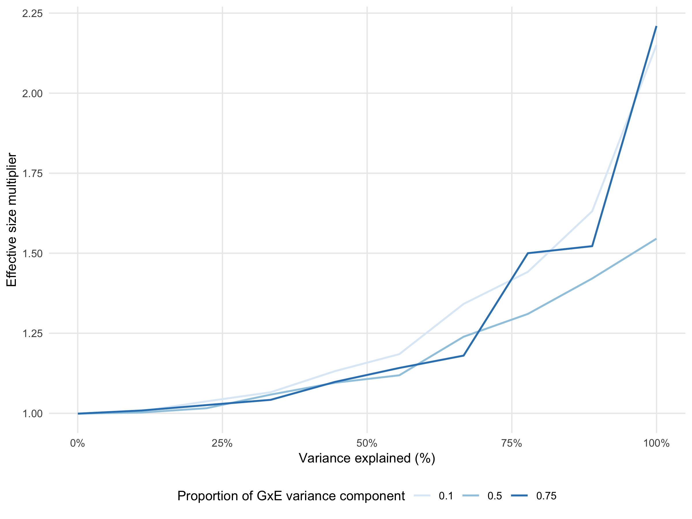

2 Supplementary Material
2.1 Supplementary Figures

Figure 2.1: Influence of family structure to detect marginal genetic effect.

Figure 2.2: Influence of family structure to detect interaction genetic effect.

Figure 2.3: Influence of GxE variance component to detect interaction effect.
2.2 Propositions
2.2.1 Quadratic forms
If \(x\) is a vector of random variables, then the quadratic form \(x^TAx\) is a scalar random variable.
If \(x\) has mean \(\mu\) and (nonsingular) covariance matrix \(V\), then
\[E(x^TAx) = tr(AV) + \mu^T A \mu\]
\[\sigma^2(x^TAx) = 2tr(AVAV) + 4\mu AVA \mu\]
See (Lynch and Walsh 1998, Appendix 3, pp. 843) for more details.
2.3 Analytical derivations
\[\begin{equation} y \sim \mathcal{N} (X \beta, V) = \mathcal{N} (\mu x_0 + \beta_x x, \sum{\sigma_i^2 R_i} + \sigma_r^2 I) \tag{1.1} \end{equation}\] \[\begin{equation} \hat{V} = \sum{\hat{\sigma}_i^2 R_i} + \hat{\sigma}_r^2 I \tag{2.1} \end{equation}\] \[\begin{equation} \hat{V}^{-0.5} y \sim \mathcal{N} (\mu \hat{V}^{-0.5} x_0 + \beta_x \hat{V}^{-0.5} x , I) \tag{2.2} \end{equation}\] \[\begin{equation} \hat{\beta}_x = (x^T \hat{V}^{-1} x)^{-1} x^T \hat{V}^{-1} y \sim \mathcal{N} (\beta , (x^T \hat{V}^{-1} x)^{-1}) \tag{2.3} \end{equation}\]2.4 Simulations
2.4.1 Unrelated: marginal genetic effect

2.4.2 Families: marginal genetic effect

| Sample Size | Trace Factor |
|---|---|
| 100 | 0.8253 |
| 500 | 0.8253 |
| 1,000 | 0.8253 |
| 2,000 | 0.8253 |
2.4.3 Unrelated: interaction effect

2.4.4 Familes (two genetic components): interaction effect

| Sample Size | Trace Factor |
|---|---|
| 100 | 1.1921 |
| 500 | 1.2219 |
| 1,000 | 1.2333 |
| 2,000 | 1.2598 |
2.4.5 Familes (one genetic component): interaction effect

| Sample Size | Trace Factor |
|---|---|
| 100 | 1.2848 |
| 500 | 1.2785 |
| 1,000 | 1.2653 |
| 2,000 | 1.2596 |
References
Lynch, Michael, and Bruce Walsh. 1998. Genetics and Analysis of Quantitative Traits. Vol. 1. Sinauer Sunderland.